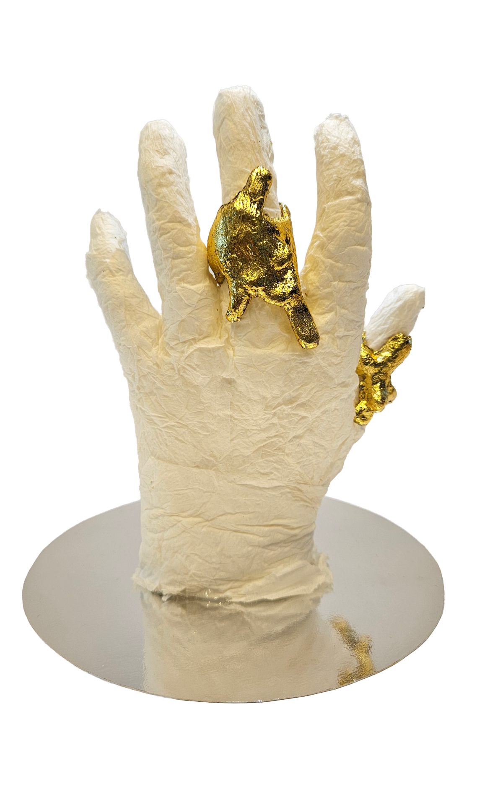

Project — 01
Smeltende sieraden
In een wereld van massaproductie wordt een object pas uniek wanneer het verandert door de drager. Door lichaamswarmte en aanraking wordt de gebruiker mede-ontwerper.
Bekijk het project →